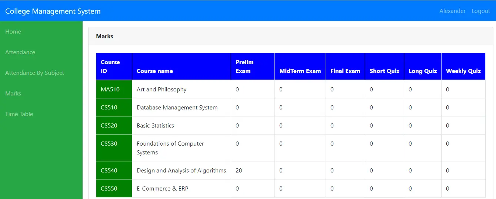

|
 |
||
Dynamic Web Page Using Oracle DatabaseA dynamic web page is a website that displays and updates information based on user requests. Oracle Database is used to store, manage, and retrieve data efficiently. The web page connects to the database to perform operations such as inserting, updating, deleting, and viewing records. This enables real-time interaction and efficient data management, making the application more responsive and user-friendly. |
College Management SystemDeveloped a dynamic web-based College Management System using HTML, CSS, Java, JSP, and Oracle Database. The application manages student records, course details, faculty information, and attendance data. Implemented CRUD operations, database connectivity, and user-friendly interfaces for efficient data management. Enhanced data accuracy, accessibility, and administrative efficiency through a centralized management system. Technologies Used: HTML, CSS, Java, JSP, JDBC, Oracle Database. |
Home Security SystemDeveloped a Home Security System to enhance residential safety by monitoring and detecting unauthorized access. The system uses sensors and security modules to identify potential threats and provide timely alerts. Implemented real-time monitoring, intrusion detection, and notification features to improve security and ensure quick response to security events. Technologies Used: Embedded Systems, Microcontrollers, Sensors, C Programming. |